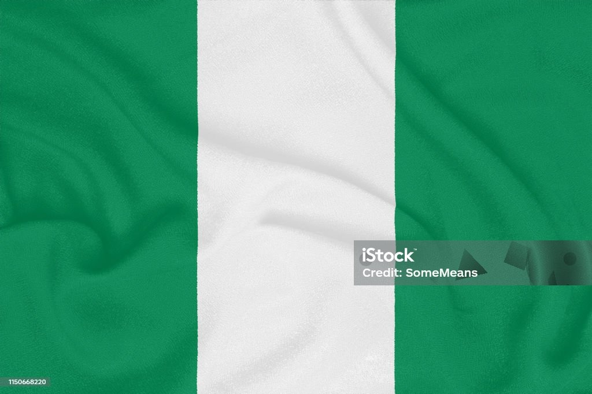

About me
I am BYU-Idaho student majoring in Software Development, blending your education with hands-on experience as a programmer, web developer, and UI/UX designer. You’re also a data entry clerk, which highlights your attention to detail and discipline. With your creative flair in graphic design and technical expertise in software, you're building a versatile foundation to thrive in both creative and tech-driven spaces. Plus, your Leo energy probably adds a confident and determined vibe to everything you do

Wisdom Samuel
Nigeria, officially the Federal Republic of Nigeria, is a country in West Africa. It is situated between the Sahel to the north and the Gulf of Guinea in the Atlantic Ocean to the south. It covers an area of 923,769 square kilometres (356,669 sq mi). With a population of more than 230 million, it is the most populous country in Africa, and the world's sixth-most populous country. Nigeria borders Niger in the north, Chad in the northeast, Cameroon in the east, and Benin in the west. Nigeria is a federal republic comprising 36 states and the Federal.
